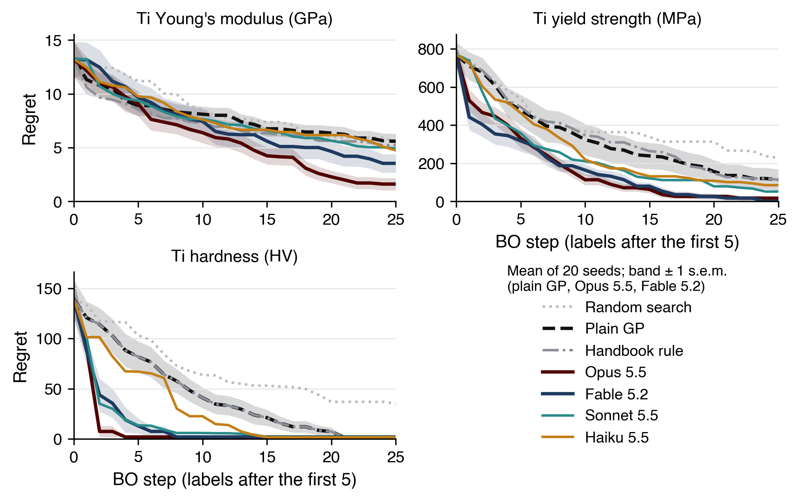

MATERIALS SCIENCE & ENGINEERING
TEXAS A&M UNIVERSITY
Department of Materials Science and Engineering
33

Regret after 25 steps
Ti modulus, GPa:
GP 5.6, Opus 1.6, Fable 3.5
Ti yield strength, MPa:
GP 114, Opus 17, Fable 0
Ti hardness: 2 HV by step 5 (Opus)